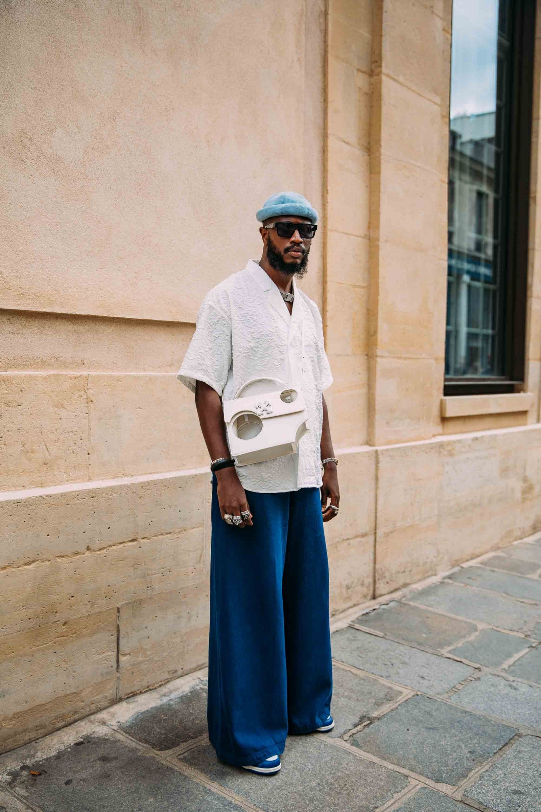
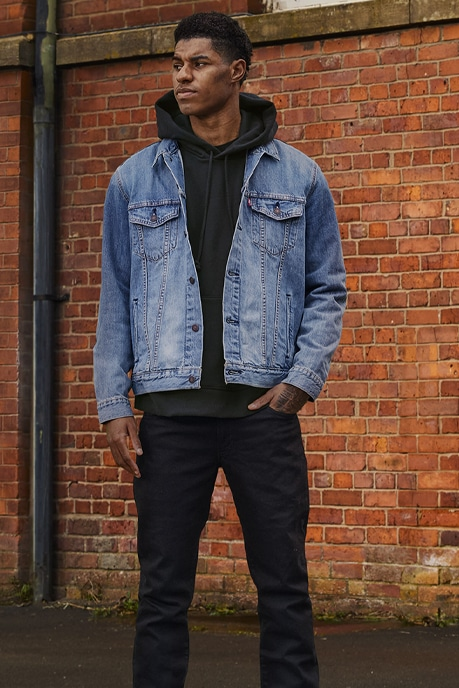
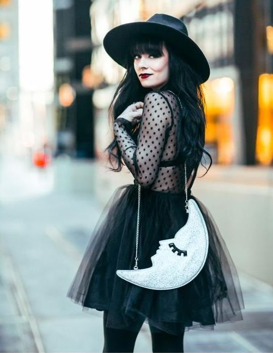
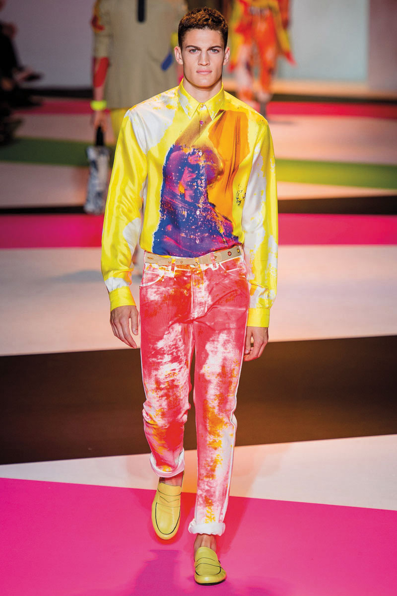
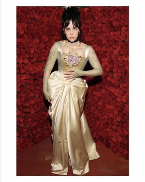
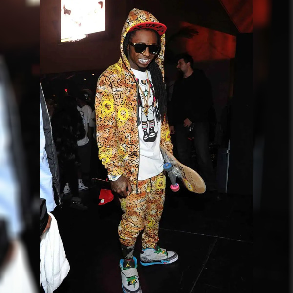

Vintage Fashion style📽
vintage fashion styles
Vintage fashion stylesis a generic term for garments originating from a previous era. The phrase is also used in connection with a retail outlet, e.g. in vintage clothing store. Today vintage dressing encompasses choosing accessories, mixing vintage garments with new, as well as creating an ensemble of various styles and periods.[1] Vintage clothes typically sell at low prices for high end named brands. It has been part of the world since World War I as an idea of reusing clothing because of the textile shortage.[2]
Casual fashion style😎
Casual fashion style
casual wear(or casual attire or clothing) is a Western dress code that is relaxed, occasional, spontaneous and suited for everyday use. Casual wear became popular in the Western world following the counterculture of the 1960s. When emphasising casual wear's comfort, it may be referred to as leisurewear or loungewear. While casual is "informal" in the sense of "not formal", informal attire traditionally refers to a Western dress code associated with suits - a step below semi-formal attire - thus being more formal than casual attire.[1]
Goth fashion style🕷
Goth fashion style
Gothic fashion is a clothing style marked by dark, mysterious, antiquated, homogenous, and often genderless features. It is worn by members of the Goth subculture. Dress,[1] typical gothic fashion includes dyed black hair, exotic hairstyles, dark lipstick and dark clothing.[1] Both male and female goths can wear dark eyeliner, dark nail polish and lipstick (often black) for a dramatic effect. [2] Male goths use cosmetics at a higher rate than other men. Styles are often borrowed from the punk fashion (such as spiked wristbands and chokers) and can also draw influence from Victorians and Elizabethan fashion.[1] Goth fashion is sometimes confused with heavy metal fashion and emo fashion.
Artsy fashion style🎨
Artsy fashion style
Artistic Dressing was a fashion movement in the second half of the nineteenth century that rejected highly structured and heavily trimmed Victorian trends in favour of beautiful materials and simplicity of design. It arguably developed in Britain in the early 1850s, influenced by artistic circles such as the Pre-Raphaelites, and Dress Reform movements. It subsequently developed into more specific categories such as Aesthetic Dress and Künstlerkleid on the continent.
Glam fashion style💎
Glam fashion style
Glamour is the impression of attraction or fascination that a particularly luxurious or elegant appearance creates, an impression which intensifies reality. Typically, a person, event, location, technology, or product such as a piece of clothing can be glamorous or add glamour. "Glamour" originally referred to a magic spell, an illusion said to be cast by witches. Virginia Postrel says that for glamour to be successful it nearly always requires sprezzatura—an appearance of effortlessness, and to appear distant—transcending the everyday, to be slightly mysterious and somewhat idealised, but not to the extent it is no longer possible to identify with the person.[3] Glamorous things are neither opaque, hiding all, nor transparent showing everything, but translucent, favourably showing things.[4]
Hip-Hop fashion style💯
Hip-Hop fashion style
Hip hop fashion (also known as rap fashion) is a distinctive style of dress originating from Urban Black America and inner-city youth located in New York City, followed by Los Angeles, then other cities across the United States.[1] All have contributed various elements to the overall style seen worldwide today.